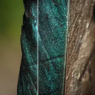

Bump Map

Lights the layer as if its brightness were a raised surface, for an embossed, textured look that keeps the colors.
Settings
| Setting | Type | Range | Default |
|---|---|---|---|
| Light Angle | Angle | -3600° to 3600° | 135° |
| Height | Number | 0 to 30 | 4 |
| Ambient | Number | 0 to 1 | 0.4 |
| Shine | Number | 0 to 1 | 0.3 |
| Light Color | Color | – | #FFFFFF |